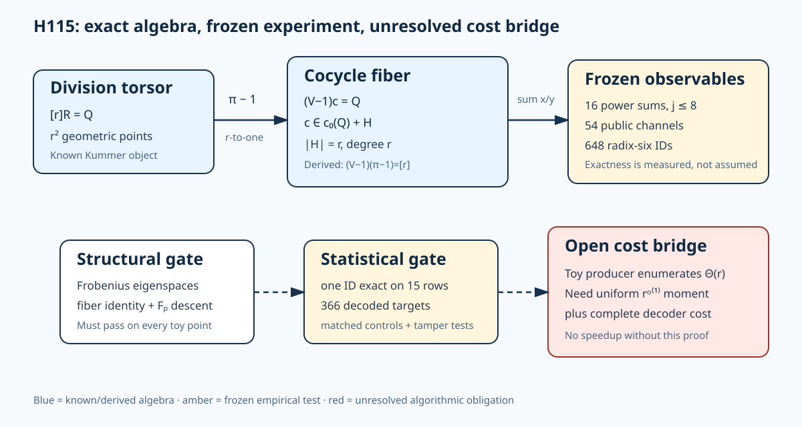

An exact degree reduction, a frozen finite falsification experiment, and the unresolved cost barrier separating the two from a subexponential algorithm.

For an ordinary prime-field curve with r=#E(Fp)=p+1−t, Frobenius π and Verschiebung V give
The r²-point division torsor maps with multiplicity r onto one r-point fiber.
The frozen producer enumerates all r fiber points for every target. This is Θ(r), exponential in the input length log r.
A subexponential result still needs a uniform ro(1) moment construction and complete decoder cost.
Let Q∈E(Fp) and choose R with [r]R=Q. Its Frobenius cocycle cR=(π−1)R satisfies
Changing R by T∈E[r] changes the cocycle by (π−1)T. With the checked rank/cardinality premises,
A public section is c0(Q)=[(p−1)−1 mod r]Q, so the complete fiber is c0(Q)+H. The Lean layer proves the group identities, exact fiber/coset equivalence, nonempty-fiber/kernel cardinality equivalence, CRT-6 reconstruction and a conditional scalar-blind group update. It deliberately assumes—rather than manufactures—the exact digit premise and subexponential cost premise.
Sixteen raw moments feed 38 generator-normalized ratio/cross/mixed channels. Each of 54 channels is reduced modulo two and three under every alphabet permutation, giving 54·2!·3!=648 fixed public IDs.
| p | curve (a,b) | r | t | d=ordr(p) | pd | Nd/r² |
|---|---|---|---|---|---|---|
| 7 | (1,1) | 5 | 3 | 4 | 2,401 | 99 |
| 5 | (2,1) | 7 | −1 | 6 | 15,625 | 320 |
| 13 | (2,4) | 17 | −3 | 4 | 28,561 | 99 |
| 31 | (1,19) | 37 | −5 | 4 | 923,521 | 675 |
| 47 | (1,38) | 61 | −13 | 3 | 103,823 | 28 |
[m]G=Q replay| Layer | Status | What it establishes | What it does not |
|---|---|---|---|
| Prior-art screen | SCOPED | Torsor/Kummer/biextension/EDS overlap documented. | External novelty proof. |
| Lean, 526 lines | PASS | Generic identities, fibers, multiplicity premise, score handoff and decoder. | Exact predicate or efficient moments. |
| Rust source, 2,200 lines | PASS | Strict compile; five-curve unlabeled structural selftest. | Candidate score; --run unexecuted. |
| Independent verifier | PASS | Separate tuple-field reconstruction; 8/8 synthetic tampers rejected. | Real packet handshake (no packet exists). |
| Checkpoint / EKS | BLOCKED | Nothing measured. | No score, selected ID, decoder result or timing. |
| Object or phase | Geometric size | Frozen implementation | Open obligation |
|---|---|---|---|
| Full division torsor | r² | Not enumerated by H115 | Baseline only |
| Frobenius cocycle fiber | r | Construct H, enumerate every element | Uniform construction |
| One target moment | r terms | Θ(r) point/field work | ro(1) shortcut |
| Full digit decoder | O(log r) queries if oracle exact | Conditional group update proved | Public exact oracle plus total cost |
H115 is a fully specified and independently checkable toy experiment around an exact algebraic compression. It is not yet an empirical result because the mandatory checkpoint transport is unavailable, and it is not a subexponential algorithm even if the frozen digit test later succeeds.
Internal bindings: crypto PR #4625, producer source 6d8def5473; cryptanalysis PR #1739, verifier ed206d8d. Scoped search found no source stating this exact frozen moment family; absence is not a novelty proof.